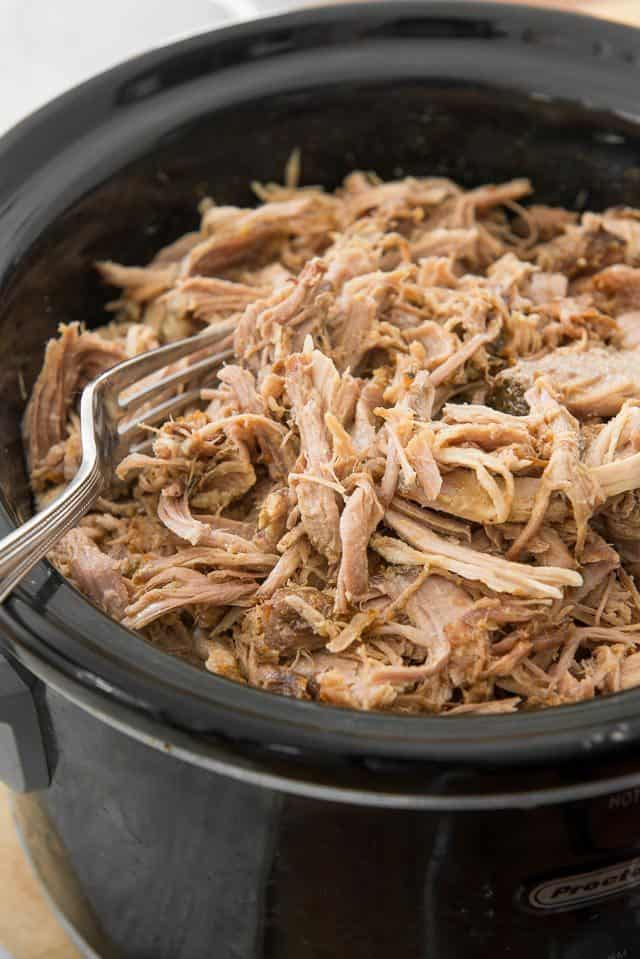

Sweet and Savory Slow Cooker Pork

This is a sweet and savory pulled pork that combines many techniques for the best flavor. The slow cooker makes the meat fall off the bone!
Ingredients
For the Pulled Pork
- 4 lb boneless pork shoulder (aka pork butt)
- salt
- pepper
- Sazon seasoning (optional)
Compatible Side Dishes:
- Coleslaw
- Red Potato Salad
- Roasted Brussel Sprouts
- Crispy Smashed Potatoes
Steps
- Season the pork all over with salt, pepper, and any other seasonings you'd like, then place it in the slow cooker.
- Cover with a lid and cook on low for about 8 hours, until it reaches an internal temperature of 190F.
- When the pork is done cooking, remove it to a board, and let cool for at least 20 minutes before shredding with a fork.
- Take the leftover liquid from the crockpot and strain it to remove any solids.
- If you don't mind the fat, add the liquid back to the shredded pork and toss well. If you want to remove the excess fat, chill the liquid in an ice bath in the refrigerator for about 30 minutes until the fat solidifies, then discard, and pour the remaining liquid over the pork.
- Serve the meat as is, or stuff into homemade whole wheat hamburger buns. Enjoy!